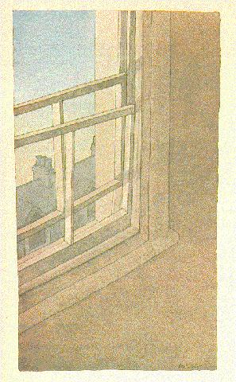
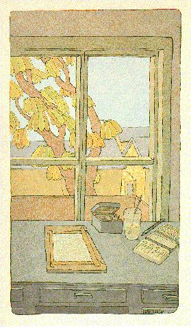
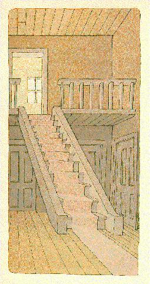
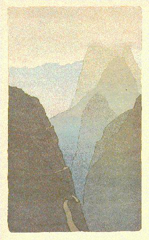

They're briefly described in an article in Melody Maker article from January of 1977:
This evening I visited Peter Schmidt (the painter who did the cover for Tiger Mountain and Evening Star, and with whom I published Oblique Strategies).He has just returned from a holiday in Madeira, and we look at the 12 watercolours he made there. The last three of the series are quite exceptionally beautiful - a tiny road winds down the side of an almost vertical mountain whose peak is lost in the clouds.
Peter describes his walk from the top of the mountain, and says it was frightening since there were man-sized rocks fallen on the road. We discuss the idea of fear as an aid to perception. I describe an experience I had in Scotland recently where I climbed a very steep hill at twilight - absentmindedly not paying much attention to where I was going - and came to a halt, breathless and exhausted, on a small plateau near the summit. For the first time I looked to see where I was.
The plateau was covered with dead ferns, which glowed a brilliant fiery orange in the dusk. I was tired enough not to try to reduce the experience to words and concepts, so I just stood open-mouthed for some minutes.
This was an instance of exhaustion as an aid to perception - presumably the conscious mind resigns this continual obsession with classification and the attendant reassurance at times like this, and so the quality of the experience is unfiltered.
Later in the evening we talk about the work of Die Brucke, the group of German painters active between 1905-25, who impressed us all so much in Berlin. I particularly liked Otto Mueller and Karl Schmidt-Rotluff.
Peter posed the question: "What could one do now that would have the sense of daring which those works had?" I reply that I think the answer must lie in doing things that are very quiet, which make no assault, and perhaps do not obviously trade in novelty. Like watercolours. At a time when drama is at a premium, reticence and delicacy communicate best.
Before I leave, we discuss the possibilities of marketing visual objects in the way that records are sold. We both agree that this would drastically alter the nature of contemporary painting, since it would once again put it in touch with demand on the level of a genuine response to the work itself, rather than to its "value" (be that financial or "cultural").
I walk from Peter's in Stockwell to Victoria station. It is a cold, exhilarating night. I am thinking about writing a song called "Man Making Measurements And Dancing." I can't sleep until 4.00 am because I have a flurry of ideas which won't wait their turn. It is most annoying.



